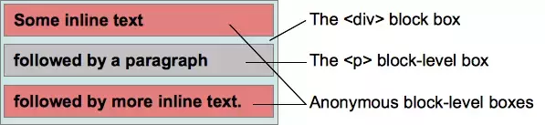

视觉格式化模型(visual formatting model)
1、视觉格式化模型是用来处理文档并将它显示在视觉媒体上的机制，它也是CSS中的一个概念。
2、视觉格式化模型定义了盒（Box）的生成，盒主要包括了
块盒、行内盒、匿名盒（没有名字不能被选择器选中的盒）
以及一些实验性的盒（未来可能添加到规范中）。
3、盒的类型由display属性决定。
块盒（block box）
1、当元素的CSS属性display为block，list-item或table时，它是块级元素 block-level；
2、视觉上呈现为块，竖直排列；
3、块级盒参与(块格式化上下文)；
4、每个块级元素至少生成一个块级盒，称为主要块级盒(principal block-level box)。一些元素，比如
，生成额外的盒来放置项目符号，不过多数元素只生成一个主要块级盒。
注意
display:table本身不会创建块级格式化上下文。但是由于它可以产生匿名盒(anonymous boxes)，而匿名盒中的display:table-cell可以创建新的块级格式化上下文。换句话说，触发块级格式化上下文的是匿名盒，而不是display:table。编程人员需要铭记于心的是，虽然这两种样式都能够创建新的块级格式化上下文（间接的或者直接的），但是display:table的clear却和display:table-cell的clear效果不一样。
最后一个触发块级格式化上下文的是fieldset元素。奇怪的是，www.w3.org里没有任何有关这个触发行为的信息，直到HTML5标准里才出现。有些浏览器bugs（Webkit，Mozilla）提到过这个触发行为，但是没有任何官方声明。实际上，即使fieldset在大多数的浏览器上都能创建新的块级格式化上下文，开发者也不应该把这当做理所当然的
行内盒（inline box）
1、当元素的CSS属性display的计算值为inline，inline-block或inline-table时，称它为行内级元素；
2、视觉上它将内容与其它行内级元素排列为多行；典型的如段落内容，有文本(可以有多种格式譬如着重)，或图片，都是行内级元素；
3、行内级元素生成行内级盒(inline-level boxes)，参与行内格式化上下文(inline formatting context)。同时参与生成行内格式化上下文的行内级盒称为行内盒(inline boxes)。所有display:inline的非替换元素生成的盒是行内盒；
4、不参与生成行内格式化上下文的行内级盒称为原子行内级盒(atomic inline-level boxes)。这些盒由可替换行内元素，或 display 值为 inline-block 或 inline-table 的元素生成，不能拆分成多个盒。
匿名盒（anonymous box）
匿名盒也有份匿名块盒与匿名行内盒，因为匿名盒没有名字，不能利用选择器来选择它们，所以它们的所有属性都为inherit或初始默认值。
<
div
> Some inline text <
p
>followed by a paragraph<
/p
> followed by more inline text. <
/div
>

参考博文：学习 BFC (Block Formatting Context)